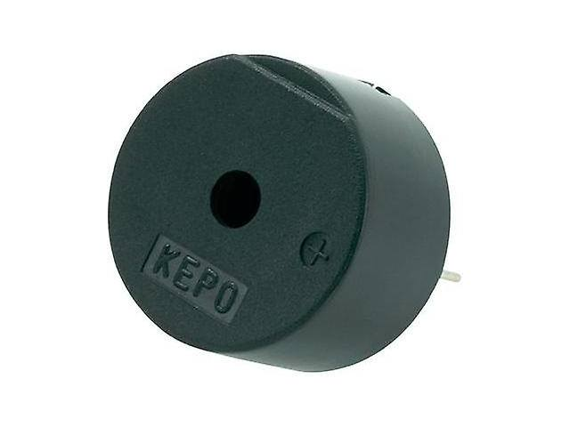

Les buzzers piézoélectriques avec oscillateur intégré
Qu'est ce qu'un buzzer piézoélectrique avec oscillateur intégré ?

Les oscillateurs convertissent le signal DC en signaux AC périodiques qui peuvent être utilisés pour définir la fréquence, être utilisés pour des applications audio, ou utilisés comme signal d'horloge.
Tous les microcontrôleurs et microprocesseurs nécessitent un oscillateur pour définir le signal d'horloge afin de fonctionner.